Booting Issues
Canon Printers on Linux Lite
Create System Report tool
Dual Boot - Multiple Drives
Dual Boot - Modification/Repair
Dual Monitor Setup Instructions
Finding help online
Graphics Drivers and Setup
Graphics - ATI
Graphics - NVIDIA
Graphics - NVIDIA Optimus
Hardware Database
HP Printers on Linux Lite
Installation Issues
Keyboard Related
Printer Setup
Resources for Audio Drivers
Resources for compatible Printers
Sound Configuration
Hardware Database
Wondering if your laptop or desktop will work on Linux Lite?
Check out our Hardware Database here to see if your model is already listed. Don't forget
you can also run Linux Lite live before you install it to see if your hardware is supported. This database feature is new so the
list of computers at the moment is limited. If you already have Linux Lite installed, please consider adding your hardware to
the Linux Lite Hardware Database to help others.
Graphics Drivers and Setup
Legacy Binary Drivers and Proprietary Binary Drivers
Legacy binary driver - a driver for older video cards no longer supported by the current driver.
Propietary binary driver - a driver for newer video cards.
If you're not sure whether your video chipset/card needs a legacy binary driver or a proprietary binary driver, please select from the following links for nVidia and ATI:
nVidia Legacy information - If your card is listed here, you can either use the pre-installed video driver for Linux Lite or you can try the legacy driver. Linux Lite recommends you stick with the pre-installed video driver as it is the most reliable, and the safest choice.
ATI Legacy information - Read the information under Other Links to see which cards are classed as legacy cards. Linux Lite recommends you stick with the pre-installed video driver as it is the most reliable, and the safest choice.
If you have a modern video card and you would like to use the latest driver, continue reading below.
Graphics - ATI
If you're not sure whether or not you have ATI graphics, open up a terminal and run this command:
sudo lshw -C display
You can see that under product: there is a reference to Radeon, a brand of ATI.
NOTE: You must be connected to the internet before you start the driver install.
The next step is to go to Menu, Settings, Install Drivers.
The program will then scan your computer for any drivers that you may need, this may take some time.
When it has finished scanning, you will see a dialog box similar to the one below.

For ATI, we would select: Using Video Driver for the AMD graphics accelerators from fglrx (proprietary) (second in the list in the above picture). Now click on Apply Changes. Enter your password when prompted.
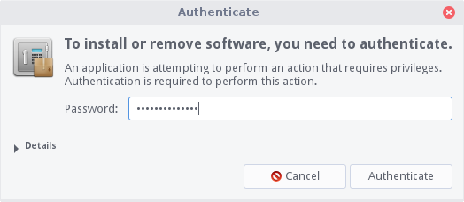
You will then see this dialog as it downloads and installs the driver:

When the driver has finished, click on Close. Now restart your computer.
Now we need to make sure that our new Menu entries launch correctly. Go to Menu, Settings, Main Menu.

A new window will pop up, select Settings on the left then the first AMD menu entry on the right and click on Properties. This will bring up a new window, edit each field so that it looks the same as in the picture below. When you have finished editing, click on OK on the Launcher Properties window.
Now click on the second AMD menu entry on the right and click on Properties. This will bring up a new window, edit each field so that it looks the same as in the picture below. When you have finished editing, click on OK on the Launcher Properties window. Now click on Close on the Main Menu window.

The AMD Catalyst menu item will let you configure your graphics, with limited access in the Catalyst Control Center.

The AMD Catalyst Admin window will give you full access to all the settings in the Catalyst Control Center including options like Switchable Graphics if you have it. You will need to enter your password to access this control panel.

Graphics - NVIDIA
If you're not sure if your graphics card is nVidia or not, open up a terminal and run this command:
sudo lshw -C display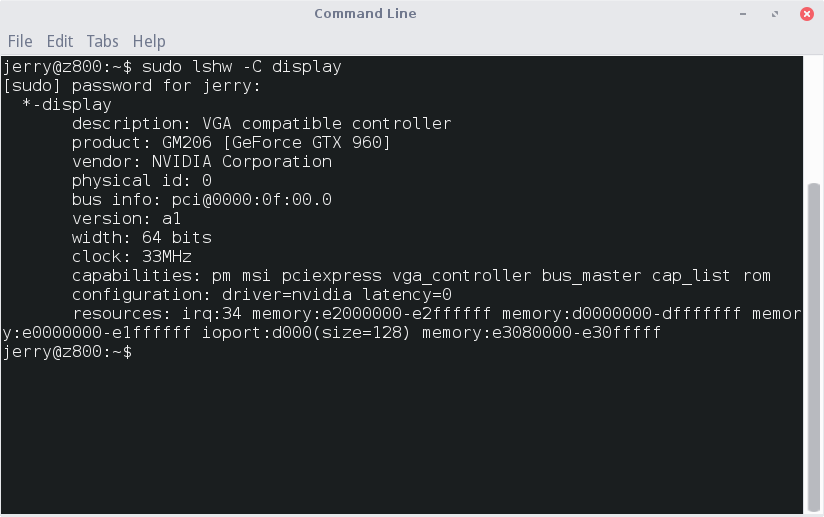
You see under product: nVidia or GeForce (and similar naming schemes for nVidia cards) depending on your card. The vendor: line may also show you the Product or Company name.
NOTE: You must be connected to the internet before you start the driver install.
The next step is to go to Menu, Settings, Install Drivers.
The program will then scan your computer for any drivers that you may need, this may take some time.

When it has finished scanning, you will see a dialogue box similar to the one below.
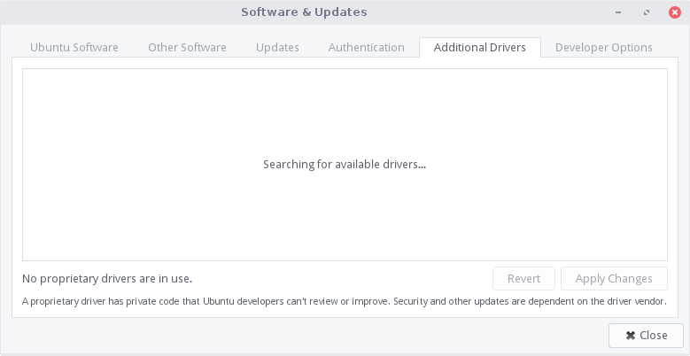
Generally you will want to select the current version, the tested driver. In the above example we selected the Using NVIDIA binary driver (proprietary, tested).
NOTE: If you plan to play graphic intensive games or you have a lot of Steam games, you need to select the proprietary, tested driver.
Now click on Apply Changes. You will be prompted for your password:
You will see the following dialog as it downloads and installs:
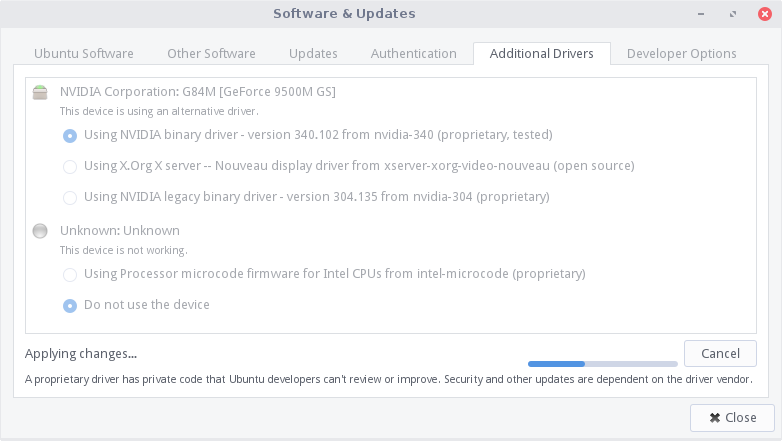
When the driver has finished, restart your computer.
Now head over to Menu, Settings, NVIDIA X Server Settings.

Once you open NVIDIA X Server Settings, you will be brought to a window similar to this one. It's best to allow the resolution to be set to auto for most monitors, however you can adjust it manually using the drop down menu Resolution.

Test your settings before saving. When you are happy with your changes, click on Save to X Configuration File (you will be prompted for your password to write the xconfig file), Then click on Quit to exit the settings window. Any adjustments should be automatic.

Graphics - NVIDIA Optimus
From a fresh install of Linux Lite, open up a terminal and type:
sudo apt-get update
sudo apt-get install nvidia-prime nvidia-331-updates nvidia-settingsNow restart your computer.
Dual Monitor Setup Instructions
If you have two monitors, they will start out 'mirroring' the same displayed output.
To get the monitors to act as one large area allowing you to spread your work out separately on each, you can now do that easily through the GUI Settings Manager instead of through terminal commands and manually editing configuration files.
Go to Menu, Settings, Settings Manager.
Click on Display under the Hardware category.
You will see each monitor listed on the left side of the window. Click on one to change its settings listed on the right side. Initially, both monitors will have the Mirror displays box checked.
Click on the first monitor listed on the left and un-check Mirror displays on the right. Repeat the procedure for the second monitor.
While one of them is selected, click on the Position drop down box and designate the position you want for it relative to the other. (To the right, or to the left of the other.)
Once they are no longer mirrored, you may see that one of them is missing the desktop wallpaper and the lower panel only spans one of them.
Click All Settings to go back to the main Settings Manager window and choose Desktop under the Personal category.
Whichever monitor the Desktop settings window is on, that is the one it will apply to. Drag it over to the monitor that is blank and notice how the monitor description changes according to which one it is on.
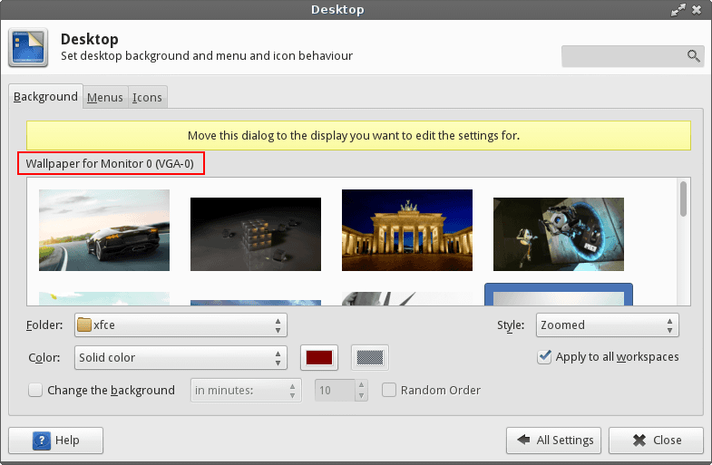
When you drag the Display settings window over to another monitor, the wallpaper that was highlighted on the one you dragged from stays highlighted, but no change will take effect on the second monitor until you actually click on one of the wallpapers. You may set a different wallpaper for each monitor.
If you want one picture to span across both screens, set the second screen to None in the Style drop down box. (Remember - you need to have the Desktop settings window positioned on the second monitor to do this.)

Then move the Desktop settings window back to the monitor with the wallpaper displayed and select Spanning screens from the Style drop down box.
Now, you will have wallpaper spanning across both screens; but you still have the panel stuck on only one of them.
To get your panel to also span both monitors, go back to the main Settings Manager window and choose Panel under the Personal category.
In the Panel settings window, click on the box next to Span Monitors.
Congratulations, you have successfully set up and configured dual monitors.
Sound Configuration
The audio icon can be found in the lower right hand corner, commonly referred to as the system tray.

You can drag the main slider to the left or right to control main volume. Now click on Sound Settings.

You will be brought to a window similar to this one. On the tabs you will see Playback, for adjusting the volume of programs currently playing or capable of playback. Recording for programs currently using recording devices, namely your microphone. Output Devices is for main configuration of sound levels across your system. Configuration is used for selecting profiles and misc settings.

In the window above you can adjust volume settings for output. Using the blue sliding bars. You can toggle mute with the
speaker icon:  It will change it's background color when active:
It will change it's background color when active:  You can lock channels using:
You can lock channels using:  so that when volume is raised or lowered it is done
equally. Or you can toggle and set the volume to be louder on one side. This icon:
so that when volume is raised or lowered it is done
equally. Or you can toggle and set the volume to be louder on one side. This icon:  is
used to specify the default device used by PulseAudio.
is
used to specify the default device used by PulseAudio.
Input Devices - this includes microphones and other line-in devices, such as TV tuner cards with line in. Adjusting the levels and settings are the same method as described above.

Configuration - this lists known profiles for your sound card. In most cases there is no need to select anything here unless you intend to disable your sound completely, or have a unique profile setting, such as surround sound, mono, or stereo out.

Recording - will list programs currently using an input method, be it line-in or a microphone. You can toggle access per program and or adjust volume per program here. The method used is the same as mentioned above.

Playback - will list programs currently producing audio, or able to. You can toggle access per program and or adjust volume per program here. The method used is the same as mentioned above.

Notes: Being able to toggle on mute and unmute on multiple things can cause issues. And at times the device may be muted upon install. Show caution here as you may mute a certain program and forget about it entirely. If unmuting and adjusting settings for your sound card and related programs do not work at all, there may be a driver issue. Refer below for resources on how to remedy this. You can find help by using the Create System Report tool and using the directions to upload the generated report to the Forums.
Resources for Audio Drivers
Ubuntu Wiki Contains a list of guides for configuring specific drivers for older and odd sets of sound cards.
Ubuntu Wiki Contains steps to help trouble shoot and configure sound cards.
Halfgaar Has a great guide to setting up surround sound under linux.
More surround sound help from here.
Printer Setup
1. Plugging in a printer will prompt a dialog if detected and attempt to find a matching driver. (If your driver was plugged in during your initial install you may not see a prompt, you may refer to step 3 below.)
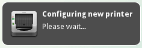
2. If a printer and driver has been detected you will see this dialog. (Note, the dialog should appear in upper right of your screen)
3. You can further configure or manage printing jobs or printers by going to printing located in Menu, System, Printers.
4. Once you open the Printing menu it will bring you to a simple dialog to select, view and manage options related to your printer.
5. You can find options for a printer by highlighting (single clicking) on the icon of the printer you wish to manage.
6. If a printer if not listed in the window after opening it you will need to plug in the device and click on the + sign located below the menu.
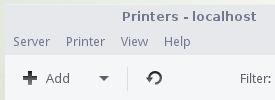
7. Once you click on the + sign above, you will see this window if the printer was detected properly. You can then select the method of connect and printer on the pane near the bottom of the window. (You may see more than one option if your device is an all in one device, so select from the left pane carefully.) From here you can also select a Network Printer if you are connected to a home network and a printer is available.
7.1 If for some reason you are unable to see a network printer on a machine using Windows you may need to configure samba (a sharing and networking tool for Linux > Windows) You can find help doing this here.
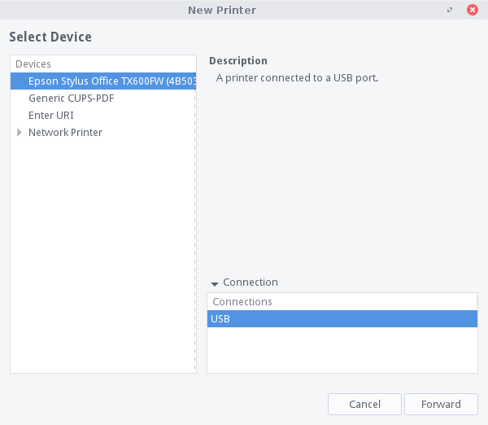
8. Clicking Forward on the above window will bring you to this window where you can set the Printer Name, Description and Location for the printer. However Description and Location are not required, unless you share a printer or use one over a network.
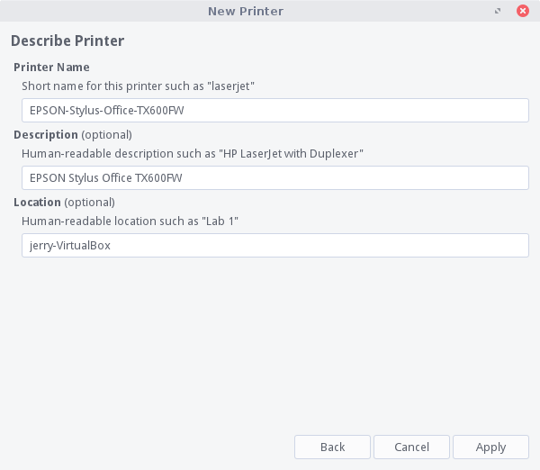
9. Cups is a web interface for managing your printer. Once installed, click here to manage your printer.
Resources for compatible Printers
Open Printing - A substantial resource for driver downloads and information.
Ubuntu's Wiki also contains a list of known working and compatible drivers and printers.
TurboPrint - Also offers a paid software alternative that has up to date drivers for Brother,
Canon, Epson & HP.
Brother - A list of drivers for Brother Printers.
HP Printers on Linux Lite
HP compatible printers can be found here, the latest master driver for HP printers is available for download here. If you have an HP Printer and you used this guide to successfully install your printer, there is a program that allows you to easily manage your printer. Open up a terminal and type:
sudo apt-get install hplip-guiOnce it's installed go to Menu, Settings, HPLIP Toolbox. This will place and HP icon in your tray where you can configure and manage your HP printer. Right click on the icon for options.
Canon Printers on Linux Lite
If your Canon printer is not supported after a new install of Linux Lite, try the following. Open a terminal and do:
wget http://old-releases.ubuntu.com/ubuntu/pool/universe/t/tiff3/libtiff4_3.9.7-2ubuntu1_i386.deb
sudo dpkg -i libtiff4_3.9.7-2ubuntu1_i386.deb
sudo apt-get install -f
rm libtiff*OR if you are on 64bit:
wget http://old-releases.ubuntu.com/ubuntu/pool/universe/t/tiff3/libtiff4_3.9.7-2ubuntu1_amd64.deb
sudo dpkg -i libtiff4_3.9.7-2ubuntu1_amd64.deb
sudo apt-get install -f
rm libtiff*Then do:
sudo add-apt-repository ppa:michael-gruz/canon-trunk
sudo apt-get updateNow open Menu, System, Install/Remove Software and search for your printer name. For example if you had the Canon MX870Series Printer then you must use the following format:
mx870series
in the search box. Now double click on your printer and click on the Apply button on the toolbar. Now add your Printer starting from Step 3 above.
Keyboard Related
You can find information for adding or modifying hotkeys (or shortcuts) on the XFCE wiki.
Booting Issues
Black screen whilst trying to boot
This is usually due to the graphics chip you have, it is easily remedied and the problem should not reappear once you have installed the graphics drivers for your computer. So first we need to boot you successfully into the desktop.
Hold down the shift key as you boot up your computer. You should see a screen like the following:

Next press the e key whilst that top line is highlighted. This will take you to the next screen. Use your arrow keys to move down to the line highlighted in the picture below. Use the arrow key until you reach the end of that line.

Press the backspace key repeatedly until you remove: ro splash quiet $vt_handoff and replace that text with: nomodeset so that it looks like the picture below.
Now press either F10 or Ctrl+X to boot your machine. Your computer will begin to boot up with scrolling text similar to what is shown below:
After which shortly you will get your normal login screen. Now you can login and install your graphics drivers.

Dual Boot Modification/Repair
You may be in a situation where you want to modify or repair your dual boot set up.
Boot-Repair is an excellent tool for the job. To install Boot-Repair, open a terminal and type (one line at a time):
sudo add-apt-repository ppa:yannubuntu/boot-repair
sudo sed 's/trusty/saucy/g' -i /etc/apt/sources.list.d/yannubuntu-boot-repair-trusty.list
sudo apt-get update
sudo apt-get install -y boot-repair && (boot-repair &)After the install Boot-Repair will launch automatically and scan your computer for your boot configuration and other operating systems.

Click Advanced options to see all the features.

Now use Boot-Repair to carry out the task you need doing. Boot-Repair is in Menu, System. More information can be found here - https://help.ubuntu.com/community/Boot-Repair
Installation Issues
No Option to Install Alongside Windows?
If this happens, it usually means that Windows is already using four partitions on the hard drive, which is the limit for BIOS based computers using traditional MBR type partitions. (Newer computers may that use UEFI firmware may use GPT partitioned drives that do not have the 4 partition limit. This discussion does not get into that.) You will need to either eliminate one of the current partitions, or add another hard drive to the computer for installing Linux Lite.
If you are unfamiliar with partitioning, it would be best to make a post on the Forums for help before proceeding. Generally speaking, in this situation there is may be a partition set aside where the manufacture has put copies of drivers and other extras that were part of the initial installation. There may also be a recovery partition that gets used for reinstalling Windows in the event that is needed. If you went through the process of creating a recovery USB or set of recovery DVD's, then you can probably get rid of the recovery partition. Same goes for the partition set aside for manufacturer installed drivers and extras, if you made a copy of that.
Once one or both of those partitions has been deleted, you may also need to shrink the main (largest) Windows partition (probably labeled as "C: drive"). If you have the space, ideally you should try to allocate 50-100GB for Linux Lite. (It will be fine with +/-15GB; but you won't have much room for expansion). Before shrinking any partition, be sure to defragment the partition in Windows first. Then shrink the partition and leave the free space as it is, un-partitioned. Do not create Linux partitions with Windows disk manager. It is best done using Linux tools.
At that point, you can go ahead and run the installer again and it should now offer the choice to install "Alongside Windows". If it needs to it will create an "extended" partition that will serve as a container for the "logical" partitions needed for the installation. (That is a way that is commonly used to get around the 4-partition maximum rule. As long as only 3 partitions are "primary", an extended partition can be used to house multiple logical partitions within it - thus giving you the ability to have more than four partitions.)
Does Your Newer Computer Use UEFI Firmware for Booting?
If you have a newer model computer with UEFI firmware, it may allow for two modes of booting: UEFI/EFI-mode or BIOS/CSM/Legacy-mode. There is a good chance that Windows is installed to the hard drive in UEFI-mode. In that case it will also be using the newer GPT partitioning scheme on the hard drive. (This applies mainly to Windows 8, but some versions of Windows 7 may be installed that way too.)
You need to confirm for sure which way Windows is installed before attempting the Linux Lite installation. The first thing to check is whether or not you are using a 64-bit version of Windows. You should be able to find that out by going to the "System" section from the "Control Panel". If you find that it is a 32-bit version, then you will be able to install Linux Lite. (Only 64-bit versions of Windows currently support UEFI booting.)
If you have a 64-bit version of Windows, it could be installed in either BIOS/Legacy-mode or in UEFI-mode; so you will need to investigate further. Go to Windows disk management and take a look at the partitions on the hard drive. If you see a small partition near the beginning of the drive, formatted as FAT32, labeled along the lines of "System" or "EFI System Partition", then you have a UEFI installation of Windows and will not be able to properly install Linux Lite. If you don't see that partition, then you should have an MBR-partitioned disk and you can install Linux Lite. If you need help figuring that out, take a screenshot of your hard drive partitions and post that to the Forums with your inquiry.
Currently, we do not support UEFI installations. You have two choices if that is how Windows is currently installed.
- Re-install Windows in BIOS/Legacy-mode first. (Do not attempt this without seeking help on a Windows forum!) Then install Linux Lite.
- Look for another Linux distro that does have UEFI support.
Dual Boot Install on Systems with More Than One Hard Drive?
When choosing to install Linux Lite alongside Windows on a computerwith more than one hard drive, the default action of the installer is to install the Linux boot loader to the MBR of the first hard drive. Since Windows is likely installed to the first drive, its boot loader will be replaced on the MBR with the Linux boot loader. The Linux boot loader will see the Windows installation and add it to the boot menu on start-up. This is how most people do the installation.
However, some people prefer to keep the Windows boot loader intact on its own drive and install the Linux boot loader to its own drive. (There are various reasons for doing that, the most common being that it makes booting Windows easier if they decide to remove the Linux installation.) After the installation completes, they then set the computer's BIOS to boot from the Linux drive. Even though the Linux boot loader is installed to a separate drive, it will see the Windows installation and add a boot choice for it. By booting from the Linux drive, you get the choice to boot either OS. If you later remove Linux, simply reset the BIOS to boot from the Windows drive and it will boot Windows as it did before your installation of Linux.
To accomplish this, you must choose the "Something else" option from the "Installation Type" screen during installation. On the following screen you will set-up your partitions and mount points manually. Then, near the bottom of the window, you need to set the "location for boot loader installation" to the MBR of the drive containing Linux Lite. For example, if you had two hard drives - /dev/sda (Windows) and /dev/sdb (Linux) - you would set the location to /dev/sdb (without any partition number at the end).
If you are not experienced with partitioning, or are unsure about how to proceed, post on our Forums for assistance.
Create System Report tool
The Create System Report tool was created to better help people who experienced a problem with their computer. The report contains useful information about the hardware, network and software. The idea of the tool is to run it, then you would attach the generated file to a Forum thread with a title about the issue you are having. Lets get started.
Click on Menu, System, Create System Report.
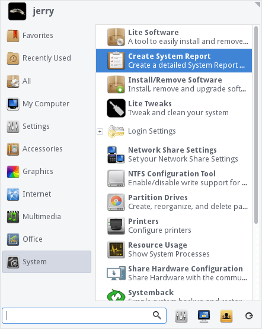
A window will pop open, enter your password when ready.
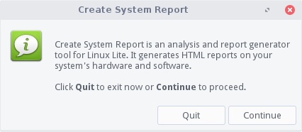
To continue, click on Create Report.
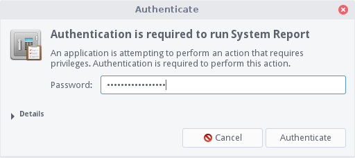
The report will take anywhere from a few seconds to less than a minute depending on your hardware.
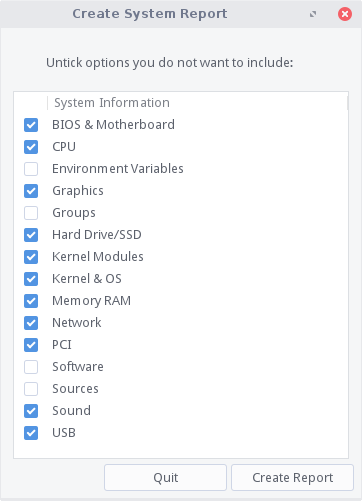
When it is finished you will be prompted to view the Report. Click on View Report.
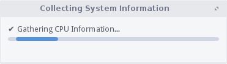
The Report will be similar to the one below.
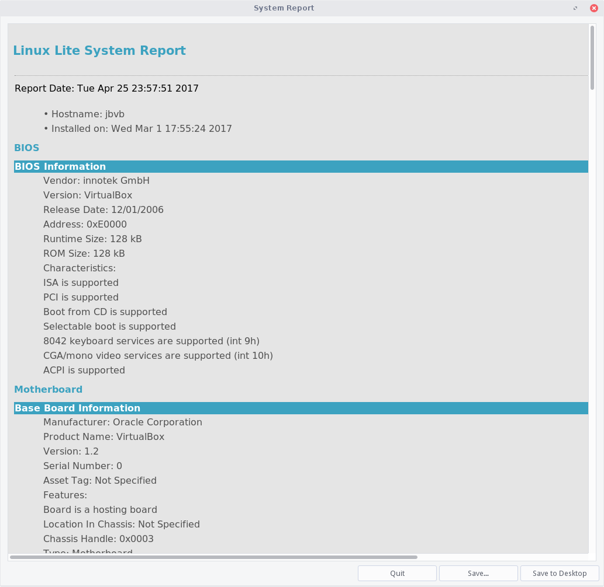
Next you'll be asked where to save the Report, in the following example we select our Home folder (/home/jerry).

In this example the Report is located in /home/jerry.
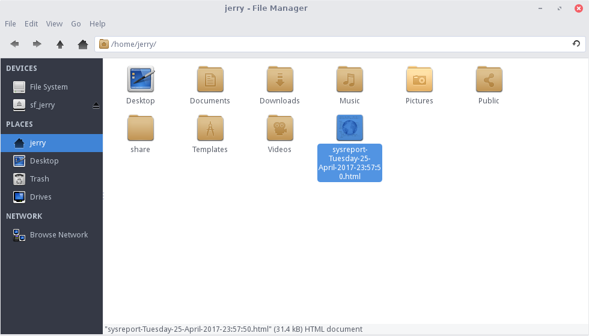
Go to the Linux Lite Forums. A link is provided here - http://www.linuxliteos.com/forums/ Start a new thread with an accurate Title description of the problem you are having, then a detailed write up of your problem. At the bottom of the page you will see where you can add attachments. Browse to /home/youruser and select the report.

Now click on Post, and someone will help you as soon as they're available.
Finding help online
Feel free to seek advice or help on the Forums at any point. Or use any other means of support or contact located here. If you can not find a solution contained in this page or links of related information.